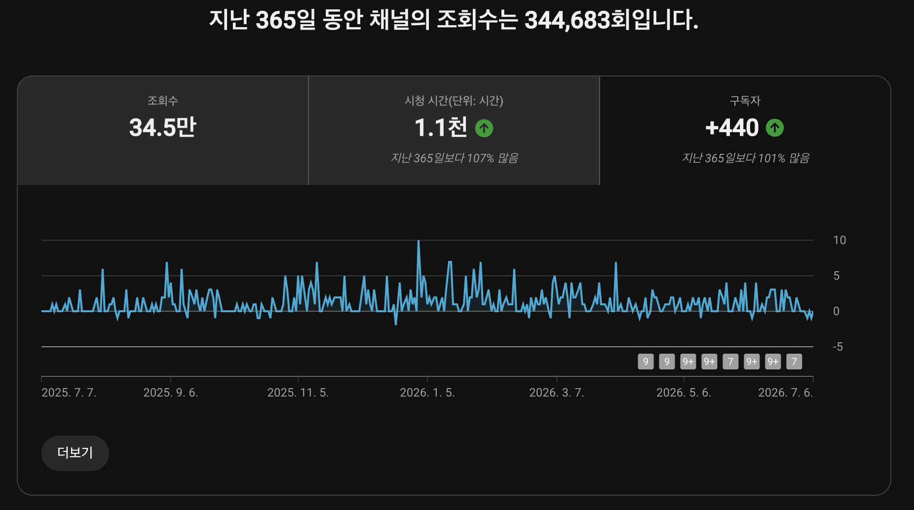
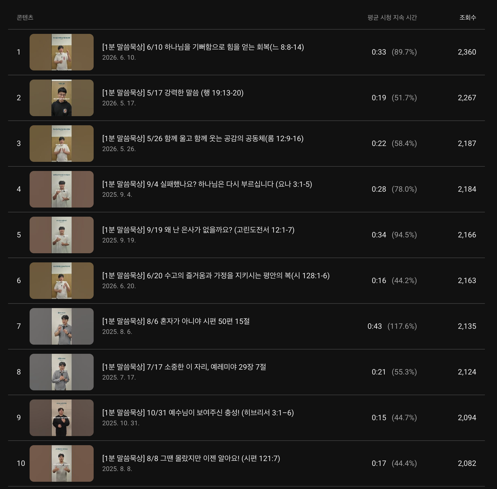

생활권 피드 노출
교회 인근 관심사와 지역 해시태그를 반영해 릴스와 피드 노출을 설계합니다.
작은교회 섬김 프로젝트
더 웨이 필름 X HEM은 작은 교회가 가진 따뜻한 매력과 주일의 말씀을 쇼츠, 인스타그램, 네이버 플레이스에 맞게 다듬어 지역 주민과 성도에게 자연스럽게 소개합니다.
작은 교회는 규모가 작아서 덜 중요한 곳이 아닙니다. 오래 기도해 온 성도들, 동네를 향한 마음, 목회자의 진심, 조용히 쌓아 온 사역의 이야기가 있습니다.
이 프로젝트는 그 매력을 온라인 플랫폼에 알맞은 언어로 소개합니다. 성도에게는 주중 말씀 리마인드가 되고, 지역 주민에게는 우리 동네 교회를 처음 만나는 따뜻한 접점이 됩니다.
주일에 들은 설교와 교회의 이야기가 주중 피드에서 다시 떠오르도록 돕습니다.
동네에 이런 교회가 있다는 사실을 부담 없는 짧은 콘텐츠로 알립니다.
매주 쌓이는 말씀과 사역을 교회의 온라인 자산으로 전환합니다.
작은 교회의 매력은 멀리서 한 번에 보이지 않을 때가 많습니다. 그래서 교회 주변에서 생활하는 주민, 새로 이사 온 가정, 주말에 근처를 검색하는 사람에게 교회의 이야기가 천천히 닿도록 설계합니다.
교회 인근 관심사와 지역 해시태그를 반영해 릴스와 피드 노출을 설계합니다.
교회를 검색했을 때 보이는 사진, 소식, 링크 흐름을 함께 점검합니다.
성도들이 카카오톡과 소그룹방에 부담 없이 나눌 수 있는 문장으로 다듬습니다.
세로형 영상 문법, 자막, 컷 편집, 시선을 여는 첫 문장까지 영상의 완성도를 맡습니다.
기독교교육과 선교 현장 이해를 바탕으로 말씀의 문맥과 표현을 확인합니다.
교회의 분위기, 성도 구성, 지역 특성에 맞춰 콘텐츠 톤과 노출 동선을 설계합니다.
첫 달 50% 할인으로 부담 없이 시작하고, 실제 반응을 본 뒤 계속할지 결정할 수 있습니다.
단순히 영상을 예쁘게 만드는 것이 아니라, 신앙 콘텐츠가 온라인에서 읽히고 공유되는 흐름을 직접 운영해 왔습니다. HEM 채널은 최근 365일 기준 34.4만 조회를 만들었고, 이 경험을 작은교회 콘텐츠 운영에 맞게 옮겨옵니다.
말씀 기반 콘텐츠도 짧은 호흡과 분명한 제목으로 꾸준히 발견될 수 있음을 확인했습니다.
월 평균 약 +37명입니다. 작은교회에는 한 번 스쳐 가는 노출보다, 말씀을 다시 찾아오는 사람을 꾸준히 만드는 접점이 중요합니다.
대표 콘텐츠의 제목, 길이, 시청 지속 시간을 분석해 교회별 쇼츠 방향으로 변환합니다.


나머지는 더 웨이 필름 X HEM이 매주 반복 가능한 흐름으로 운영합니다.
주일 설교 링크, 교회 소식, 행사 사진을 전달합니다.
말씀의 핵심과 교회가 가진 따뜻한 이야기를 찾습니다.
말씀의 문맥과 교회의 의도가 잘 살아 있는지 확인합니다.
자막, 제목, 업로드, 인스타그램과 네이버 플레이스 동선을 점검합니다.
"작은 교회의
따뜻한 이야기가
동네에 닿습니다."
작은교회 콘텐츠는 단순한 홍보물이 아닙니다. 한 장면을 고르더라도 교회의 온도와 말씀의 방향이 함께 살아 있어야 합니다.
첫 달은 모든 플랜 50% 파일럿으로 운영합니다.
Basic
25만 원 / 월
첫 달 12.5만 원
Standard
45만 원 / 월
첫 달 22.5만 원
Premium
90만 원 / 월
첫 달 45만 원
음성이 명확하면 가능합니다. 필요하면 촬영 환경 개선을 위한 간단한 가이드도 함께 드립니다.
모든 쇼츠는 문맥 완결성과 표현의 정확성을 확인한 뒤 제작합니다. 원하시면 담임목사님 승인 후 업로드할 수 있습니다.
이 프로젝트는 기존 전도를 대체하지 않습니다. 오프라인 전도와 목회 활동에 온라인 접점을 더하는 작은 보조 사역입니다.
가능합니다. 인스타그램 지역 해시태그, 릴스 운영, 네이버 플레이스 링크 동선, 성도 공유 문구를 함께 설계해 교회 주변 생활권에 자연스럽게 닿도록 돕습니다.
Pilot Open
첫 달 파일럿은 50% 할인으로 시작합니다. 설교 링크와 교회 소식만 보내주시면 샘플 제작 방향을 상담해 드립니다.